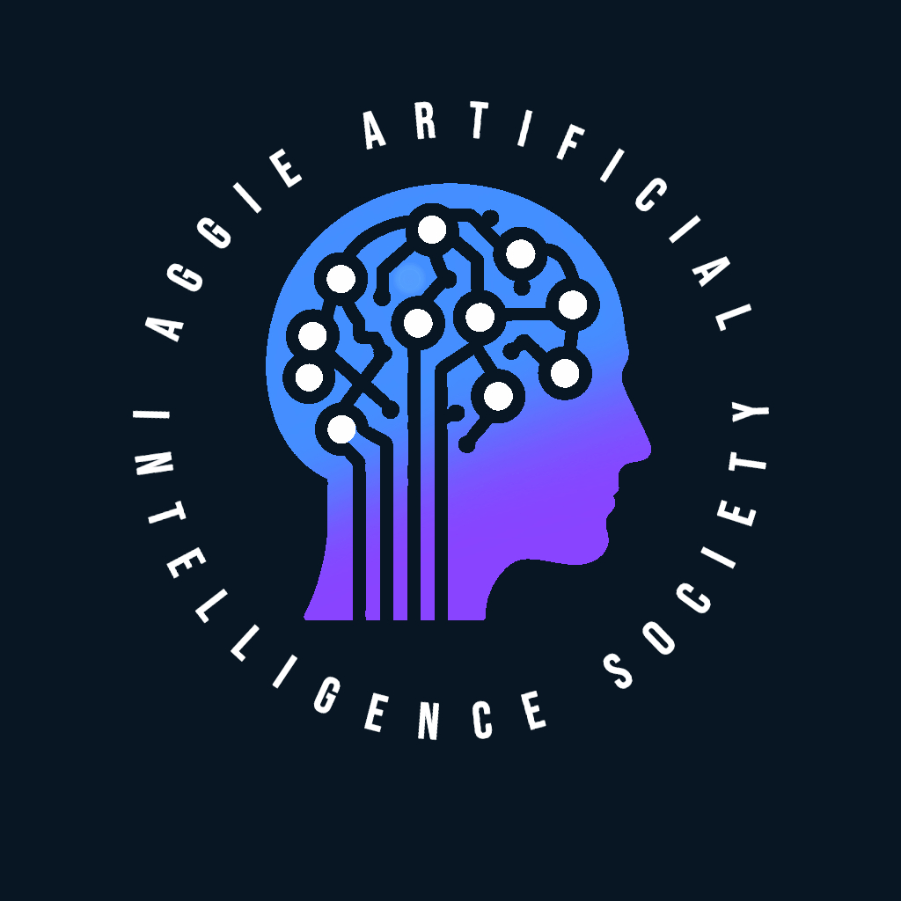
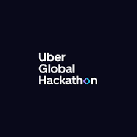
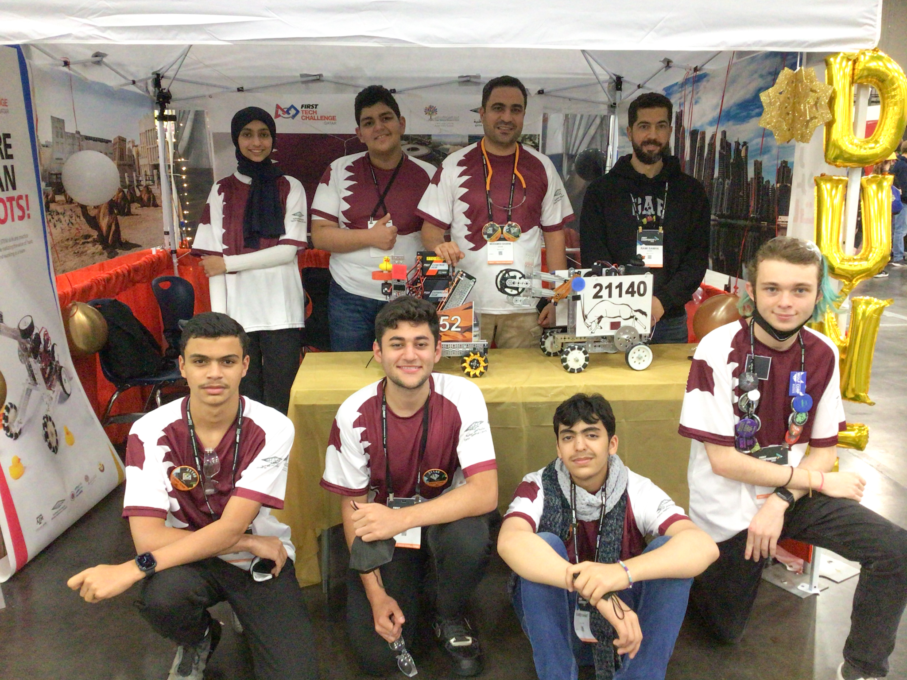

Presented workshops for the Aggie Artificial Intelligence Society (AAIS) at Texas A&M. These workshops focused on a variety of topics in AI such as Agentic AI, Deep Learning, and NLP for LLMs.

Upon winning the Uber Global Hackathon in 2022, I returned the following year to help run the Hackathon and provide support to the participants. I led a seminar for over 100 participants, where my team and I shared insights from our successful Hackathon journey. Additionally, we went over effective use of TensorFlow and its high-level API, Keras, for building deep learning models.

During my time as a member of the Qatar National Robotics Team, I mentored over 20 secondary school students in robotics, focusing on coding robots using Java and helping them build beginner-level robots.
ARTICLE ON PROGRAM